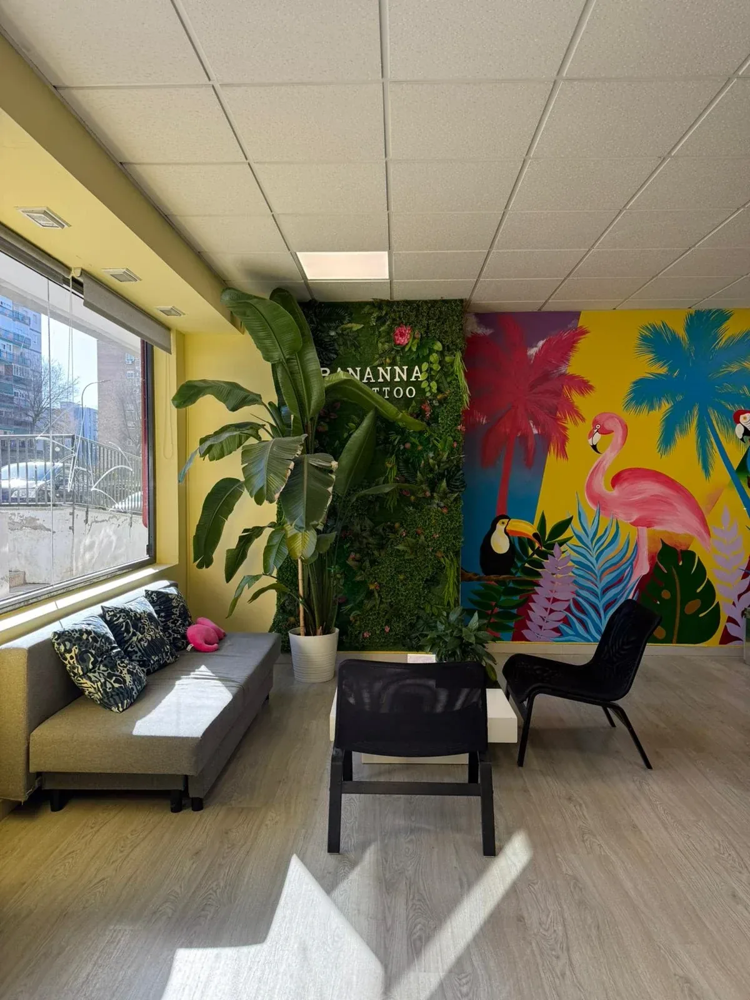
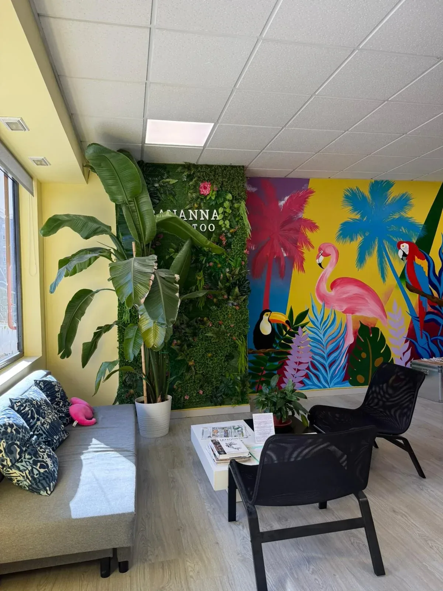
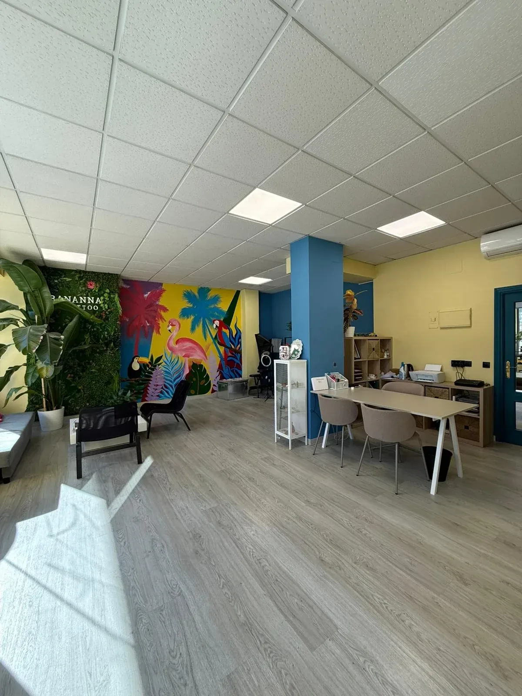
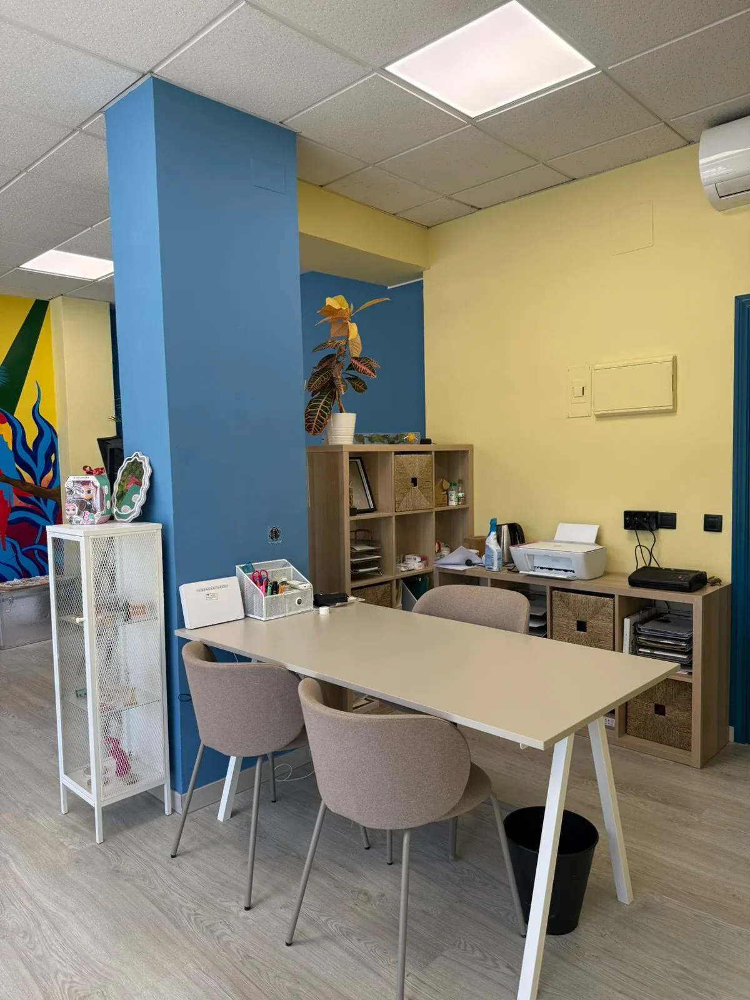

Este es nuestro estudio donde podrás hablar con las artistas en un ambiente cálido y profesional donde la comodidad es nuestra prioridad. Podrás disfrutar de una bebida mientras defines los detalles de tu próximo tatuaje.




Nuestras cabinas están diseñadas para ofrecerte la máxima comodidad y privacidad durante tu sesión de tatuaje. Cada cabina cuenta con iluminación ajustable, una silla ergonómica y un ambiente tranquilo para que te sientas relajado mientras tu artista trabaja en tu piel.